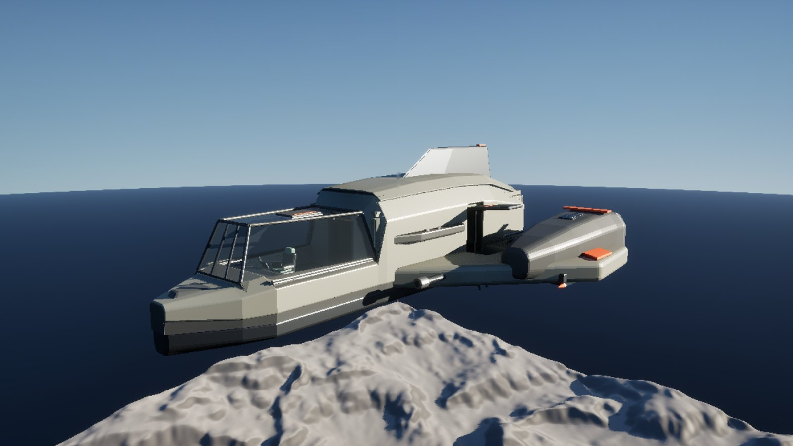
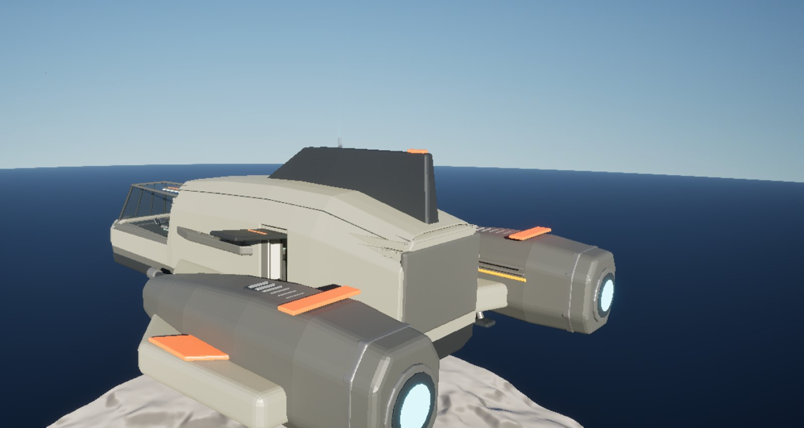
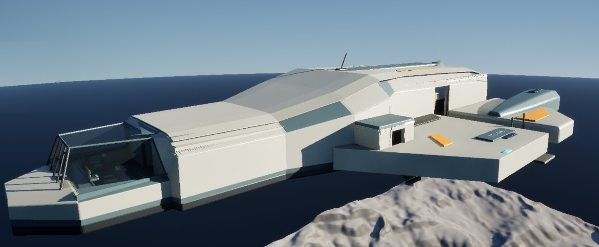

Entry 01 · Flagship · In development
Space Hauler
A first-person space hauling simulator. You fly your own ship with full six-degrees-of-freedom Newtonian flight, then unbuckle and walk around the interior while it keeps moving. Missions cover cargo runs, salvage and mining.
- Engine
- Unreal Engine 5.8
- Scripting
- Blueprints
- Platform
- PC, mouse & keyboard
- Role
- Solo: design & systems
- Status
- Active build



Newtonian 6DOF flight
- Problem
- Flight had to feel physical, yet still be controllable for players who don't want to fight momentum.
- Approach
- Physics-driven ship with a decoupled mode that preserves momentum, plus a coupled flight-assist toggle that brings velocity and rotation to zero. An autopilot holds attitude and velocity.
- Learned
- Mouse sensitivity amplified tiny jitter into cross-axis yaw; tuning input scaling mattered as much as the physics.
Walking on a moving ship
- Problem
- The player has to walk around the interior while the ship moves and rotates, without being flung around or detached.
- Approach
- The interior acts as its own reference frame with artificial gravity toward the ship floor. Open space switches the player to zero-g 6DOF; an airlock handles the interior-to-EVA transition.
- Learned
- Prototyping this as a focused spike before building more systems on top saved rework.
Cockpit MFDs and holo HUD
- Problem
- Ship information needed to live in the world, not on a flat overlay.
- Approach
- 2–4 clickable cockpit screens per ship, each able to show any page, with the layout saved. Per-mode HUDs for combat, navigation and mining, and swappable colour palettes. Designed in Figma first.
Hardpoints, mining & EVA
- Approach
- Ships carry hardpoints for swappable engines, quantum drives and shields, browsed in a station parts showroom. Mining uses a charge mechanic where laser power must sit in each rock's safe window. EVA uses a Newtonian RCS suit with oxygen and propellant.
- Decision
- Moved from a modular ship builder to single modelled ships with hardpoints, trading flexibility for art quality and simpler physics.